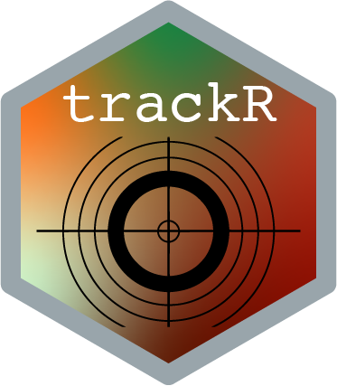

Description 
trackR is an object tracker for R based on OpenCV. It provides an easy-to-use (or so I think) graphical interface allowing users to perform basic multi-object video tracking in a range of conditions while maintaining individual identities.
trackR implements two different methods to detect objects in a video: 1. Background subtraction, which is used when a background image is provided. Background subtraction is better suited for situations where the environment in which the objects move is stable. 2. Adaptive thresholding, which is used when no background image is provided. Adaptive thresholding is better suited for situations where the environment in which the objects move is changing throughout the video (e.g. if the lighting conditions are not stable).
trackR also allows users to exclude parts of the image by using black and white masks that can be easily created and customized using any available image editor.
Finally, trackR borrows several ideas from tracktor, a command-line video tracking software for Python developed by Vivek Sridhar, Simon Gingins, and Dominique Roche.
Quick start guides
- 1 - Installation instructions
- 2 - Video tab
- 3 - Background tab
- 4 - Mask tab
- 5 - Blob tab
- 6 - Tracking tab
FAQ
–
How does trackR compare to other video tracking solutions? Did we really need another one?
trackR belongs to the category of the ‘classical’ tracking programs. It relies on good ol’ fashion image processing and simple assignment algorithms (the Hungarian method in this case, plus some k-means clustering trickery inspired by the excellent tracktor for Python). trackR does not include (for now) any fancy machine learning methods like those that can be found in the fantastic idtracker.ai for instance. The downside is that trackR’s tracking reliability is inferior to the more advanced software (in particular when the objects cross paths); the upside is that it is fast, does not require a beast of a computer to run, and therefore will soon be able to do live tracking for instance.
trackR is more similar in spirit to tracking software such as Ctrax tracktor and SwisTrack, and will most likely provide tracking reliability equivalent to these excellent programs. However, it might perform better in situations where the background is not stable, thanks to the possibility of using adaptive thresholding instead of background subtraction for segmenting the images in more difficult situations (a similar feature is offered by tracktor).
–
Will something break? Can I use trackR in ‘production’ mode?
Something will definitely break. This is version 0.1 of the software, there is still a long way to go before it is a fully finished program. This being said, it will work fine in most cases and is certainly usable for simple tracking projects. If you run into an issue, please report it at: https://github.com/swarm-lab/trackR/issues.
–
What features are in the works for future versions of trackR?
At the moment, I am considering including the following features in future iterations of trackR:
-
Add the possibility to save and restore settings for future use.[DONE] - Add the possibility to indicate whether the objects to track are darker or lighter than the background. This will be useful for the adaptive thresholding algorithm that currently works well only to detect objects darker than their background.
- Add a more sophisticated method to re-identify each individual after a crossing event (maybe something that ‘learns’ the features of each individual, a la idtracker.ai).
- Add live tracking using camera feed.
- Add the possibility to feed the tracking data through a custom R script. Currently, the data are saved in a CSV file and the user has to reimport them into R for post-processing. While this is fine for most use cases, it would not work if the user needs some form of live processing of the tracking data.
- Add some sort of GUI for manually correcting tracks.
–
How can I help?
trackR is an open-source project, meaning that you can freely modify its code and implement new functionalities. If you have coding skills, you are more than welcome to contribute new code or code improvement by submitting pull requests on the GitHub repository of the project at: https://github.com/swarm-lab/trackR. I will do my best to review and integrate them quickly.
If you do not feel like contributing code, you can also help by submitting bug reports and feature requests using the issue tracker on the GitHub repository of the project at: https://github.com/swarm-lab/trackR/issues. These are extremely helpful to catch and correct errors in the code, and to guide the development of trackR by integrating functionalities requested by the community.